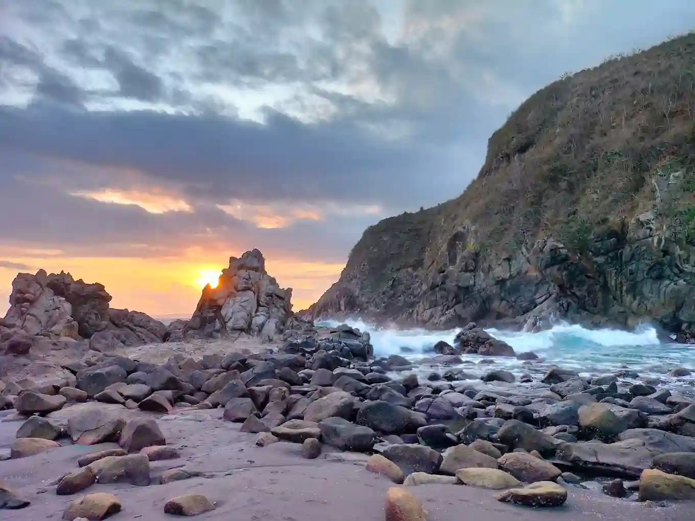

Membaca Arah Pertumbuhan Ekonomi Jember 2025
Tinjauan mendalam pertumbuhan ekonomi Kabupaten Jember tahun 2025 serta sektor pendorong utamanya.
Baca SelengkapnyaJelajahi profil lengkap Kabupaten Jember yang menyajikan ulasan komprehensif mengenai ekonomi lokal yang potensial, institusi pendidikan unggulan, serta pesona destinasi wisata alam dan festival budaya bertaraf internasional.

Wilayah dinamis di pesisir Timur Jawa dengan pesona alam indah serta perkembangan ekonomi yang pesat.
Selengkapnya →Ketahui lebih banyak mengenai Jember dari sisi pendidikan tinggi, pertumbuhan ekonomi, dan industri kreatif.
Lihat Potensi →Ikuti perkembangan terbaru mengenai program pemerintah dan kegiatan masyarakat Kabupaten Jember setiap hari.
Baca Berita →Kami adalah portal informasi terpercaya yang mendedikasikan diri untuk mengupas tuntas potensi Kabupaten Jember. Misi kami adalah menyajikan wawasan yang komprehensif mengenai dinamika dan kemajuan wilayah ini kepada publik luas.
Dari geliat sektor ekonomi lokal, perkembangan ekosistem pendidikan yang progresif, hingga pesona destinasi pariwisata dan budayanya, kami menyusun ragam artikel yang akurat, informatif, dan berwawasan bagi setiap pembaca kami.
Tinjauan mendalam pertumbuhan ekonomi Kabupaten Jember tahun 2025 serta sektor pendorong utamanya.
Baca SelengkapnyaMembahas ketimpangan fasilitas pendidikan dan inovasi digital MyDispendik di Kabupaten Jember.
Baca SelengkapnyaEksplorasi destinasi wisata edukatif yang memadukan alam, pembelajaran, dan rekreasi keluarga.
Baca SelengkapnyaJangan lewatkan pembaruan informasi mengenai potensi alam, ekonomi, dan budaya Kabupaten Jember. Hubungi kami untuk kolaborasi atau informasi lebih lanjut mengenai wilayah ini!
Hubungi Kami